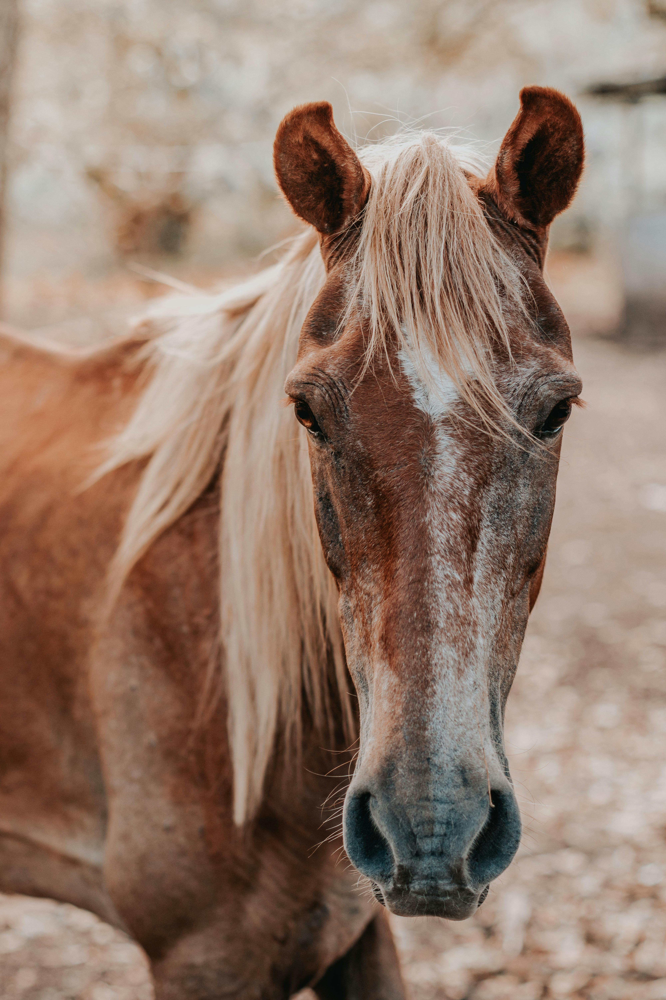

MY name is Hana Mesfin.I am second year software engineering student in addis ababa university. I am 2025 batch.I live in shegr subcity,Gelan city.
I was born in 1998 GC.My birth place is kirkos subcity,Addis Ababa, ETHIOPIA.I am orthodos chrstian.I live with my family,I have one brother and one sister.I finish my secondary school in Ethio-Japan Secondary School and Derartu Tullu Secondary School.
my favourite animal is dog and horse.

MY HOBBY
My life is a vibrant blend of stories, flavors, and faith that keeps me constantly inspired.
Reading is my primary escape, allowing me to travel through time and space from my favorite chair.
Each book I open offers a new perspective, sharpening my mind and expanding my empathy for others.
When I want to experience a story visually, I turn to watching films, which captivate me with their artistry.
Movies have a unique way of bringing emotions to life through beautiful cinematography and powerful scores.
Whether it is a gripping drama or a lighthearted comedy, film night is always a highlight of my week.
Moving from the screen to the stove, cooking is where I express my personal creativity.
I love the sensory experience of chopping fresh vegetables and hearing the sizzle of a hot pan.
Experimenting with spices allows me to turn simple ingredients into a nourishing masterpiece for others.
There is a deep sense of accomplishment in perfecting a recipe and sharing it with loved ones.
Beyond these personal pursuits, my spiritual life provides the foundation for everything I do.
Going to church is a vital part of my routine that brings me peace and a sense of belonging.
It is a time for reflection, gratitude, and connecting with a community that shares my values.
The hymns and the sermons offer me the strength and clarity I need to face the coming week.
My faith teaches me the importance of service and kindness, which I try to carry into my daily life.
Together, these hobbies create a perfect harmony between my intellectual, creative, and spiritual needs.
Reading and films fuel my imagination, while cooking allows me to provide comfort and care.
Church keeps me grounded, reminding me of the bigger picture and my purpose in the world.
I find that each of these activities feeds into the others, making me a more well-rounded person.
Living a life filled with such diverse passions ensures that every day is meaningful and bright.